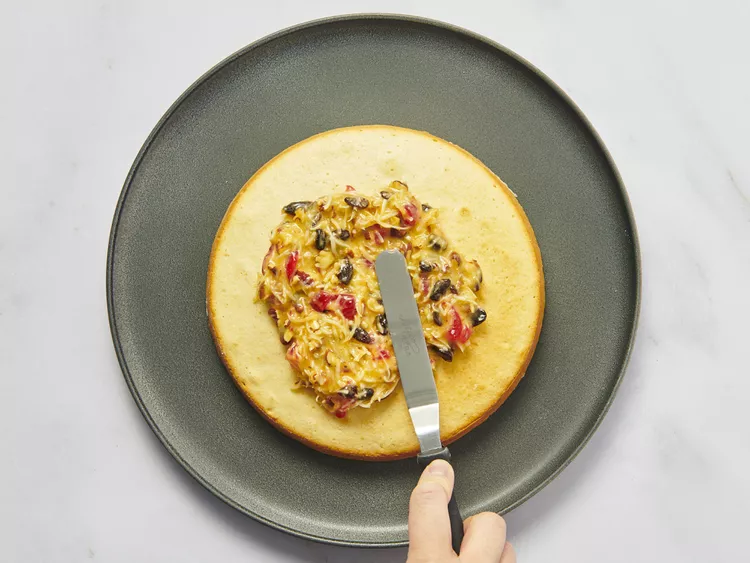

Alabama Lane Cake

Description
Lane cake, also known as prize cake or Alabama Lane cake, is a four-layer white cake with a bourbon-spiked raisin filling that originated in the American South. It's the official state cake of Alabama.
Ingredients
- 1 cup butter, softened
- 2 cups white sugar
- 1 teaspoon vanilla extract
- 3 ¼ cups all-purpose flour
- 1 tablespoon baking powder
- ¾ teaspoon salt
- 1 cup milk
- 8 egg whites
- ½ cup butter
- 1 ¼ cups white sugar
- 8 egg yolks
- ½ cup water
- 1 teaspoon brandy flavoring
- 1 cup chopped pecans
- 1 cup raisins
- ½ cup candied cherries, chopped
- ½ cup flaked coconut
Steps
- Gather all ingredients. Preheat oven to 350 degrees F (175 degrees C). Lightly grease and flour four 8 inch round cake pans.
- Cream 1 cup of the butter or margarine, 2 cups of the white sugar, and vanilla together until light and fluffy.
- Combine flour, baking powder and salt. Add flour mixture to the butter mixture in three parts alternately with the milk in two parts, beginning and ending with flour.
- Beat the egg whites until stiff. Gently fold the egg whites into the batter.
- Spread the batter evenly into the four prepared pans.
- Bake at 350 degrees F (175 degrees C) for 25 minutes or until a toothpick inserted in the center comes out clean. Allow cakes to cool. Once cool spread Lane Cake Filling between layers and frost with Seven Minute or Butter Frosting.
- To Make Lane Cake Filling: Put 1/2 cup of the butter or margarine and 1-1/4 cups of the white sugar into the top of a double boiler away from the heat. Beat together. Add egg yolks and beat well. Stir in water and brandy flavoring.
- Place over boiling water. Cook and stir until thickened. Add pecans, raisins, cherries and coconut. Stir filling until all ingredients are well combined.
- Remove from heat. Allow filling to cool before spreading between cooled cake layers.
Home